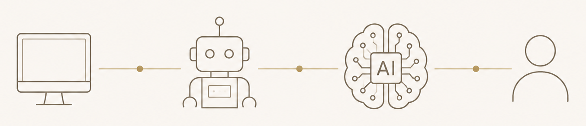

용어부터 막힙니다
IT 비전공자에게 개발자들의 언어는 또 하나의 장벽입니다. 배워도 내 일에 어떻게 써먹을지 막막합니다.
AI EDUCATION / VIBE CODING
손에 잡히는
AI 바이브 코딩
복잡한 IT 개념을 눈앞의 현실 세계로 치환합니다.
어려운 이론 대신 직접 만들고, 실무와 수익으로 연결합니다.

02 / WHY
문제는 당신에게 능력이 없어서가 아닙니다.
처음 배우는 사람에게 필요한 방식으로 기술을 설명하지 않았기 때문일 수 있습니다.
IT 비전공자에게 개발자들의 언어는 또 하나의 장벽입니다. 배워도 내 일에 어떻게 써먹을지 막막합니다.
AI가 좋다는 건 알지만, 업무를 자동화하거나 나만의 결과물로 만드는 단계로 넘어가기 어렵습니다.
설치부터 막히고 오류의 원인을 알 수 없어, 결국 다시 강의만 찾아보게 됩니다.
03 / METHOD
“
기술보다 중요한 것은,
그것을 사용하는 사람입니다.
아무리 좋은 기술도 어렵다고 느끼는 순간 멀어집니다. 그래서 복잡한 코딩과 AI의 구조를 일상에서 직접 보고 만질 수 있는 사물과 상황에 빗대어 설명합니다.
코드와 IT 구조를 일상적인 사물과 상황에 비유해 원리를 이해합니다.
AI와 대화하며 코드를 만들고 수정하면서 실제 작동하는 결과물을 구축합니다.
학습자의 업무, 직무, 사업 아이디어에 배운 기술을 직접 연결합니다.
학습으로 끝나지 않고 실제로 작동하는 완성작을 배포합니다.
04 / PROGRAMS
AI와 대화하듯 코딩하는 Vibe Coding의 기초부터 실무 자동화 도구 제작, 포트폴리오, 부업·창업 연계까지 진행합니다.
ChatGPT와 이미지·영상 생성 도구를 활용하여 업무 효율화와 비즈니스 콘텐츠 제작 방법을 익힙니다.
오랜 교육 현장 경험을 기반으로 초·중·고 및 대학생을 위한 맞춤형 SW·AI·로봇 교육을 제공합니다.
강의의 형태보다 중요한 것은 교육의 목적입니다. 특강, 워크숍, 다회차 교육까지 목적과 일정에 맞춰 설계합니다.
05 / PROOF
아이디어는 있지만 개발 지식 부족으로 직접 구현하기 어려움
일상 비유 → 바이브 코딩 이해 → AI와 함께 구현 → 실제 적용
이론 중심 교육으로 실제 프로젝트 응용력이 부족함
프로젝트 기반 SW·AI 실습 교육
낯선 기술에 대한 두려움과 학습 흥미 저하
피지컬 컴퓨팅과 SW를 결합한 참여형 교육
06 / TRUST

한 가지 기술에 머무르지 않고, 컴퓨터그래픽·소프트웨어·데이터베이스·로봇교육·생성형 AI까지 기술의 변화 과정을 직접 경험해 왔습니다.
07 / ABOUT
컴퓨터공학을 전공하고 컴퓨터그래픽, 데이터베이스 개발, 교육용 콘텐츠와 로봇교육, 다양한 IT·교육 관련 비즈니스를 거치며 오랜 시간 기술의 변화를 현장에서 경험해왔습니다.
AI는 혼자서는 하기 어려웠던 일을 가능하게 하고, 평범한 아이디어를 실제 결과물로 만들어주는 도구입니다. 저는 배우는 사람의 눈높이에서 기술을 풀어내고, 강의가 끝난 뒤에도 스스로 계속 시도할 수 있도록 돕습니다.
08 / PROCESS
일정 · 대상 · 인원 · 희망 주제를 전달합니다.
교육 목적과 수준에 맞춰 커리큘럼을 제안합니다.
장비와 실습 환경을 확인하고 일정을 확정합니다.
학습자가 직접 결과물을 완성하도록 진행합니다.
09 / FAQ
네. 비전공자와 초보자를 기준으로 전문 용어와 개념을 일상적인 비유로 설명하고, 이해한 내용을 바로 실습으로 연결합니다.
가능합니다. 교육 목적, 학습자 수준, 교육 시간과 인원에 맞춰 특강형 또는 다회차 과정으로 구성합니다.
교육 과정에 따라 다르지만, 브라우저 기반 AI 도구를 중심으로 진행해 복잡한 개발 환경 설치를 최소화할 수 있습니다.
전국 출강 및 온·오프라인 교육이 가능합니다.
교육 목적과 업무 환경을 사전에 확인한 후 맞춤형 커리큘럼으로 구성할 수 있습니다.
10 / LET'S WORK TOGETHER
교육 대상과 목적, 일정만 알려주시면 기관과 학습자에게 맞는 맞춤형 강의안을 제안해 드립니다.
맞춤 강의 제안서 신청하기 ↗